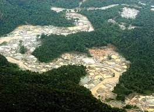
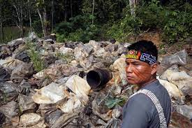

| El amazonas y sus especies |
| Pagina sobre la importancia del amazonas |
| La Contaminacion del Amazonas |
|
Las aguas amazónicas están contaminadas por diversos tipos de contaminantes, incluyendo pesticidas, microplásticos y productos farmacéuticos. La región, conocida por su biodiversidad, está experimentando contaminación tanto en los arroyos cercanos a las ciudades como en el río Amazonas y sus afluentes. La Expedición Silent Amazon, que se llevó a cabo en 2019, recopiló muestras a lo largo de 1.500 kilómetros de ríos y ha advertido sobre esta contaminación. Los resultados de esta expedición, publicados en junio de 2021, están por divulgar un análisis sobre la presencia de microplásticos en las aguas amazónicas. Investigadores recorrieron áreas urbanas clave en la cuenca amazónica, incluyendo ciudades como Manaos, Santarém y Belén, para recopilar y analizar información sobre la contaminación invisible en la región norte de Brasil. Esta contaminación está relacionada con la expansión de ciudades y actividades industriales. La expedición, con el apoyo de la National Geographic Society y el Institutos Madrileños de Estudios Avanzados (IMDEA), reveló la formación de mezclas de contaminantes en áreas de alta biodiversidad. El investigador español Andreu Rico, líder de la expedición y coordinador del proyecto, señaló que estas ciudades en crecimiento carecen de sistemas adecuados para el tratamiento de aguas urbanas, lo que impacta negativamente las áreas de mayor biodiversidad del planeta. |
| La Contaminacion del Agua |
|
Andreu Rico, un experto en contaminación en sistemas acuáticos, lideró la recolección de 40 muestras a lo largo del río Amazonas y sus afluentes, especialmente en áreas urbanas con mayor impacto. Utilizando una variedad de embarcaciones, se recopilaron muestras tanto en el agua como en áreas cercanas a eliminación de aguas residuales y ríos más pequeños. Los resultados de esta investigación, publicados en junio de 2021 en dos artículos científicos, revelan niveles significativos y una diversidad de contaminantes en las aguas de la cuenca del río Amazonas. Las grandes ciudades ribereñas están creciendo sin control, liberando diversos contaminantes como microplásticos, pesticidas, fármacos y metales pesados. Incluso los pequeños ríos en zonas urbanas como Manaos, Macapá y Belén contienen hasta 30-40 compuestos diferentes, principalmente analgésicos, antihipertensivos, estimulantes y antibióticos. |
| El impacto del plástico y los desafíos para un futuro sostenible |
|
La contaminación de los arroyos y ríos en el estado de Amazonas es evidente debido a la llegada de grandes cantidades de residuos sólidos, principalmente plásticos desechables como botellas de PET y otros envases. Según datos de la Secretaría Municipal de Limpieza Urbana de Manaos, se extraen alrededor de 27 toneladas de basura del agua diariamente. Hasta julio de 2021, más de 5.000 toneladas de desechos se habían recolectado de costas y ríos, con un promedio mensual de casi 700 toneladas. Elisa Muller, coordinadora del área de residuos de Sea Shepherd Brasil, destaca que más del 80% de los residuos en Manaos son plásticos, incluyendo botellas de PET, envases posconsumo y pañales desechables. Muller trabaja en establecer vínculos entre cooperativas, autoridades e instituciones para abordar el problema de los residuos. También resalta la importancia de la educación ambiental en comunidades ribereñas para abordar el tema del plástico y encontrar soluciones sostenibles. En áreas rurales de la cuenca del Amazonas, el plástico se deposita en vertederos en lugar de ser reutilizado. Muller enfatiza la necesidad de trabajar en la educación sobre residuos, especialmente plásticos, en las aulas y entre profesores para llegar a los hogares. Proyectos piloto, como el que se lleva a cabo en São Gabriel da Cachoeira, buscan soluciones para manejar los residuos, como la implementación de un sistema de retorno de productos en envases de plástico desde las ciudades hacia las cooperativas de recolección. |